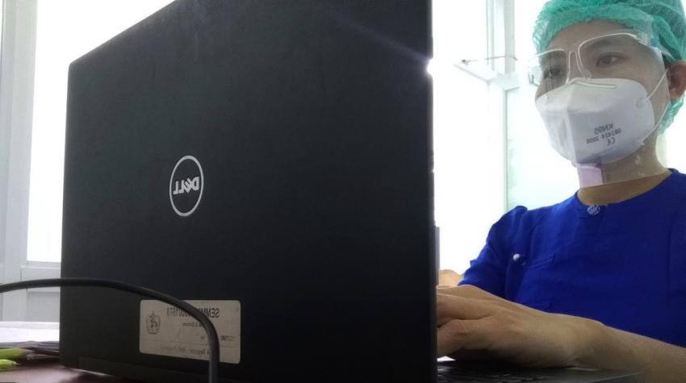
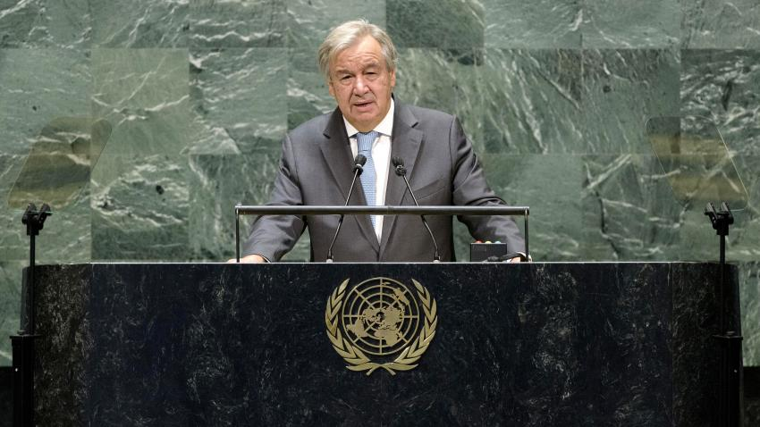
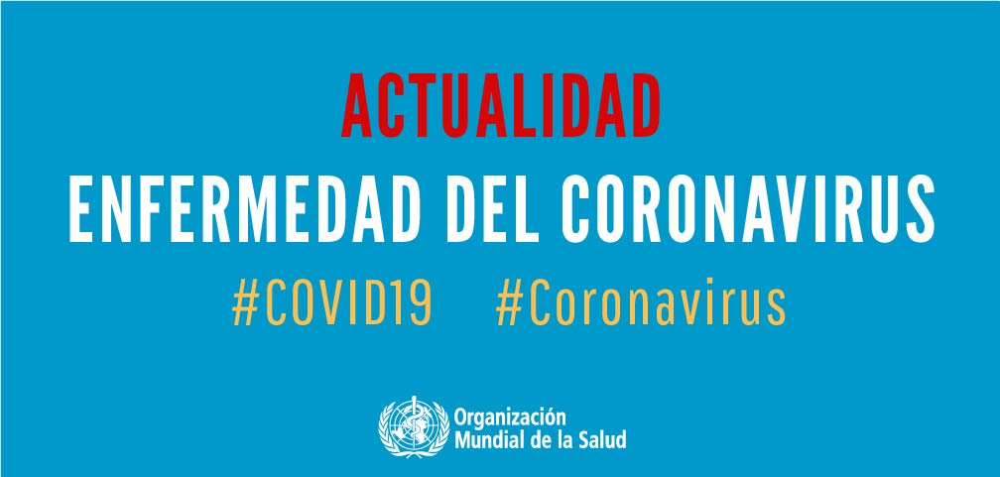

La enfermedad del coronavirus, una emergencia de salud mundial
Volveremos a abrazarnos:el inicio de la vacuna contra el COVID-19 marca el comienzo de una nueva era de prevencion
El miércoles 17 de febrero, con el inicio de la vacunación contra la COVID-19 en Colombia, se abrió un camino de esperanza para prevenir la enfermedad, salvar vidas y avanzar en la activación económica segura.


ANTÓNIO GUTERRES 15 EN 2021 | SECRETARY-GENERAL
02 DIC 2020 | DATA AND STATISTICS
ANTÓNIO GUTERREZ 14 OCT 2020 | SECRETARY-GENERAL, HEALTH
Nuestro mundo solo puede atajar este virus de una manera:UNIDOS"
Declaracion conjunta sobre proteccion de datos y privacidad en la respuesta del covid-19"
La corrupcion representa la maxina traicion a la confianza publica
Nuestro mundo ha alcanzado un hito desgarrador: la pandemia de COVID-19 se ha cobrado ya dos millones de vidas, con nombres y rostros. La ciencia cosecha éxitos y ya hay vacunas contra el COVID-19 seguras y eficaces, que deben considerarse bienes públicos mundiales, accesibles y asequibles para todos y todas. Solo podemos atajar este virus de una manera: unidos.
Se ha emitido una Declaración Conjunta sobre Protección de Datos y Privacidad en la respuesta COVID-19 de las Naciones Unidas y distintas Organizaciones del Sistema de la ONU. Dicha declaración está en consonacia con los principios de protección de datos personales y privacidad de las Naciones Unidas, así como con las recomendaciones de la Estrategia de Datos del Secretario General sobre protección de datos, privacidad y derechos humanos.
La corrupción es criminal e inmoral, y representa la máxima traición a la confianza pública. Es aún más perjudicial en tiempos de crisis, como está ocurriendo ahora en el mundo con la pandemia de enfermedad por coronavirus (COVID-19). Juntos, tenemos que crear sin demora unos sistemas más sólidos para la rendición de cuentas, la transparencia y la integridad.

Organizacion Mundial De La Salud (OMS)
Que es coronavirus
Preguntas frecuentes
En esta página se compila la información y las recomendaciones de la Organización Mundial de la Salud (OMS) y de las Naciones Unidas en relación con la neumonía causada por un nuevo coronavirus (2019-nCoV) que se originó en la ciudad china de Wuhan en diciembre de 2019. Aquí encontrará información actualizada.
Los coronavirus (CoV) son una gran familia de virus que suelen causar enfermedades respiratorias, desde el resfriado común hasta el síndrome respiratorio agudo severo (SRAS).
Iniciativa de las Naciones Unidas para poner freno a los bulos y la información falsa con contenido en el que puedes confiar.